Formats des cours privés
UI SPEC 04 — une proposition limitée à la section Formats et à sa liaison avec Nos expériences. Référence avant : 14df990.
Photos et polices distantes bloquées par le proxy. Les captures n’utilisent aucun substitut artificiel. Les quatre cartes d’expériences sont conservées ; la nouvelle section Formats ne comporte pas de photo. La hauteur reste naturelle pour préserver toute la copie, même au-delà de la cible indicative.
Expériences et Formats ensemble — 1440 px

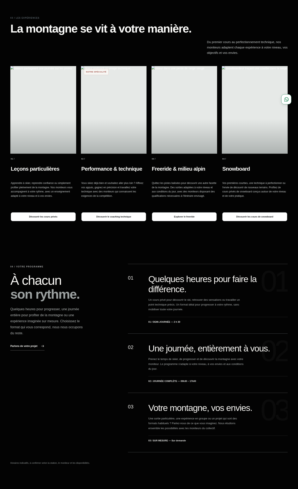

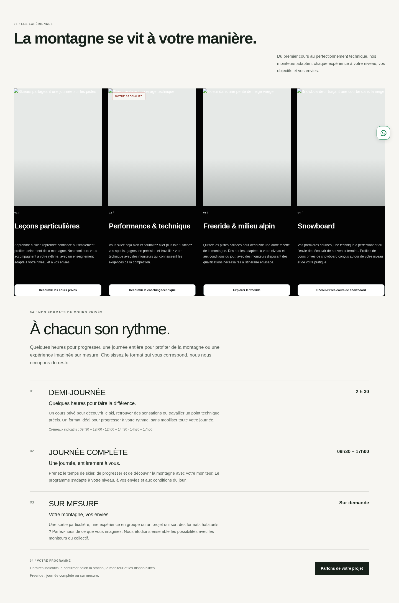
1536 × 960
Section entière · Viewport exact


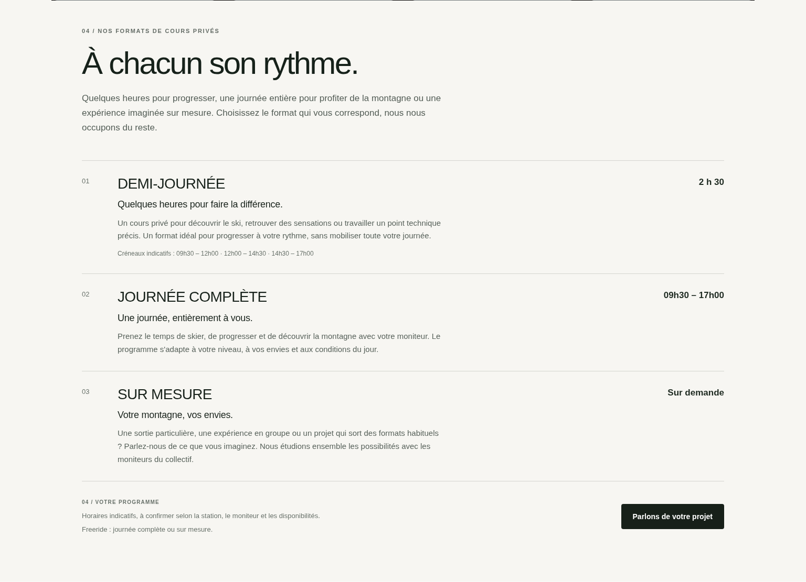
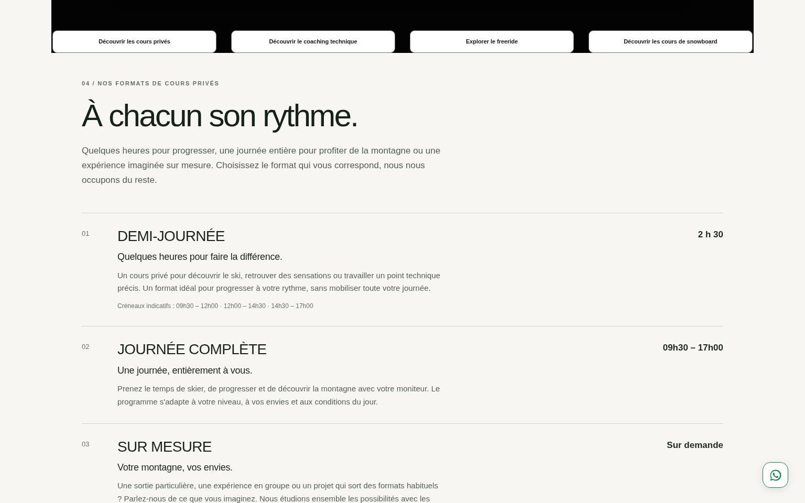
1440 × 900
Section entière · Viewport exact


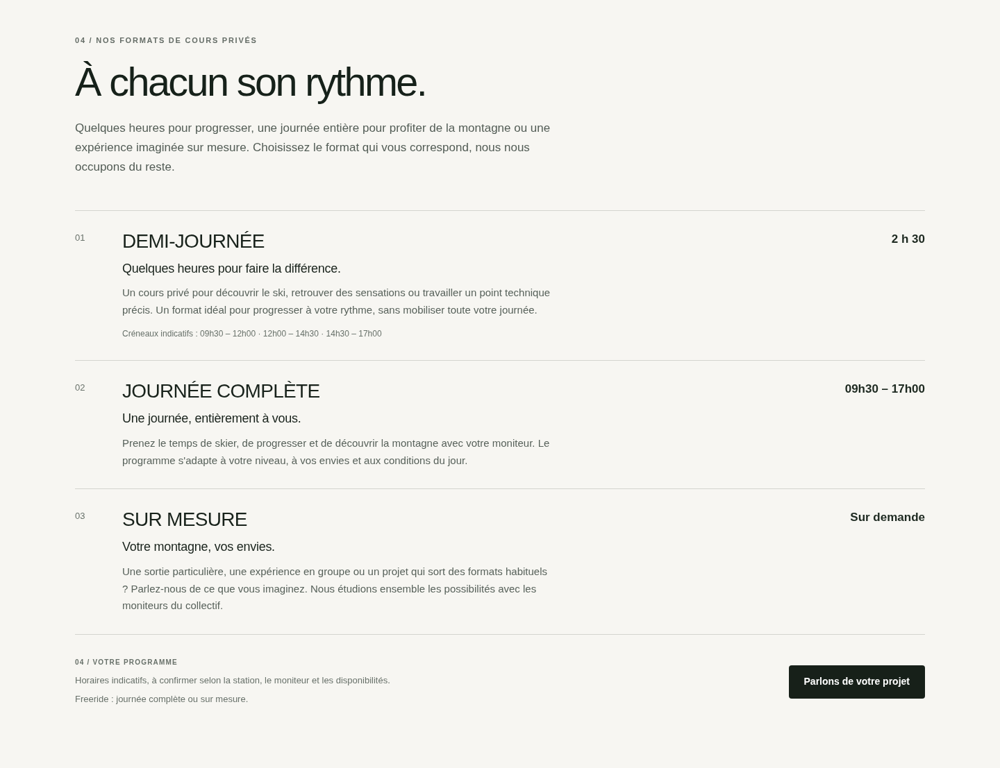
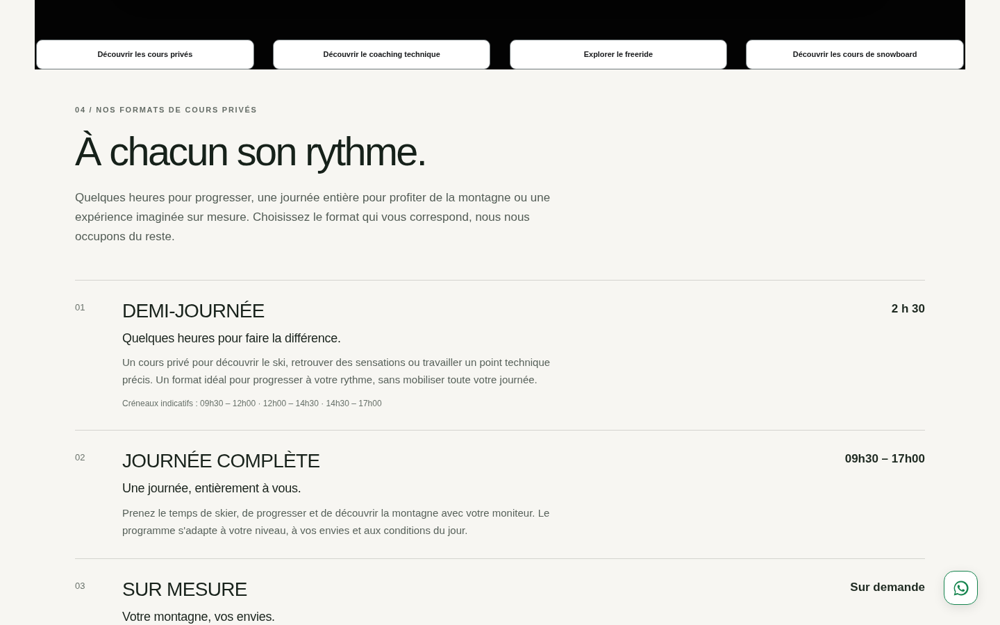
1280 × 800
Section entière · Viewport exact


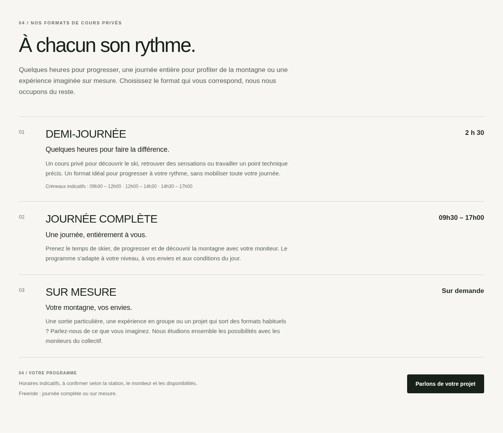
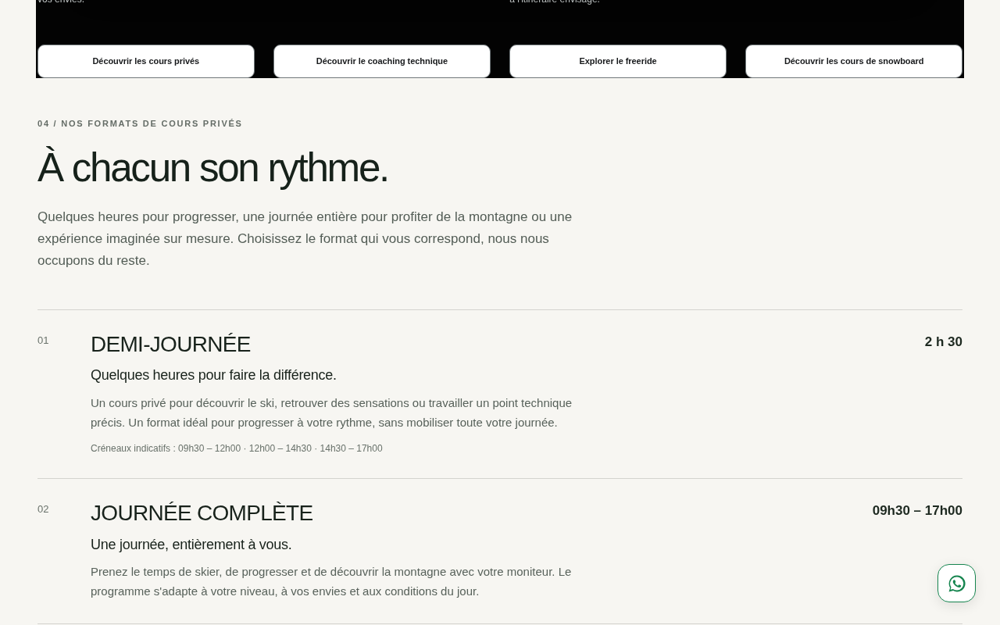
1024 × 768
Section entière · Viewport exact


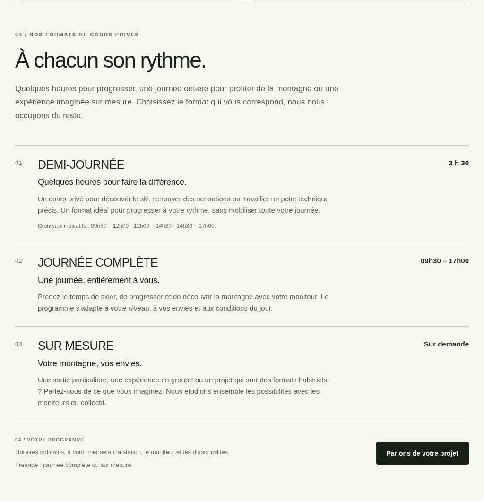
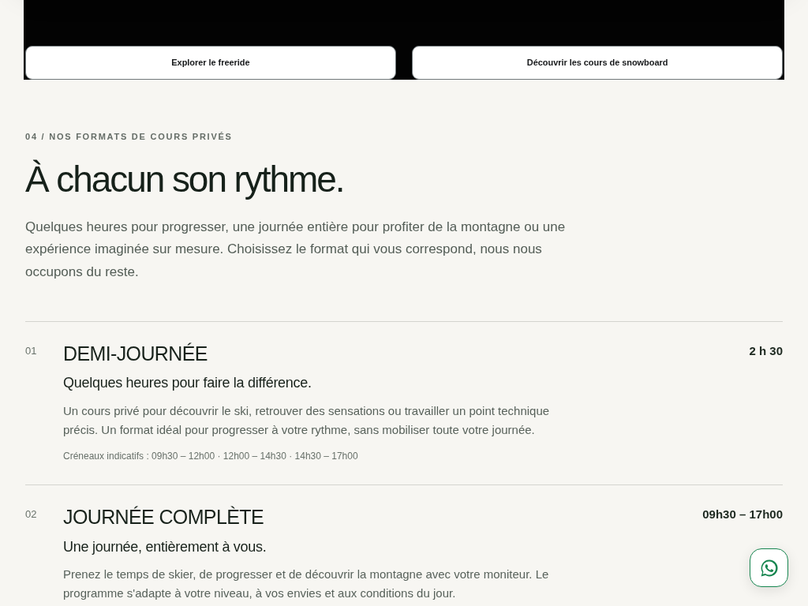
768 × 1024
Section entière · Viewport exact


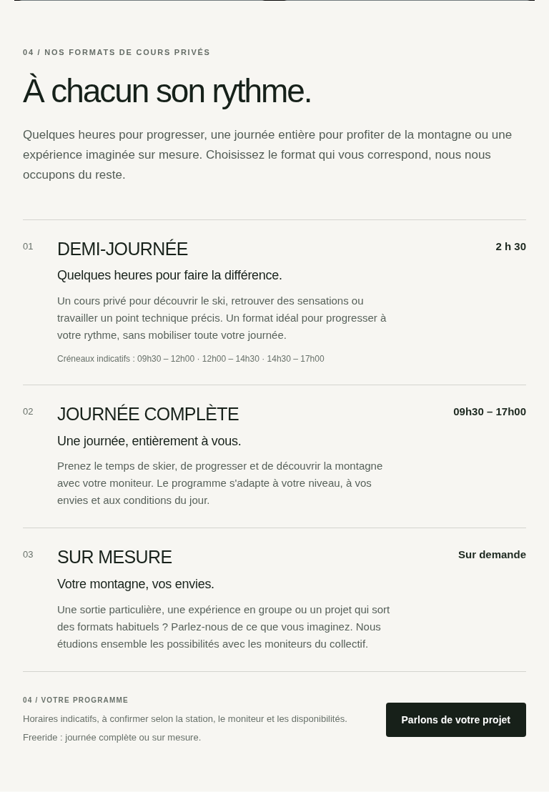
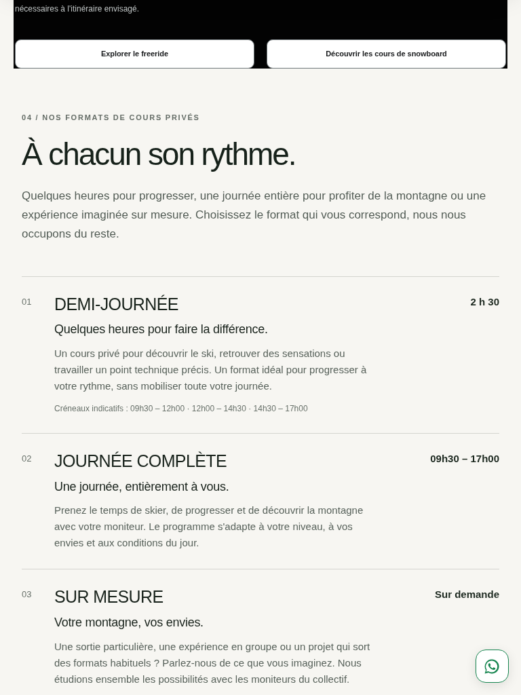
390 × 844
Section entière · Viewport exact


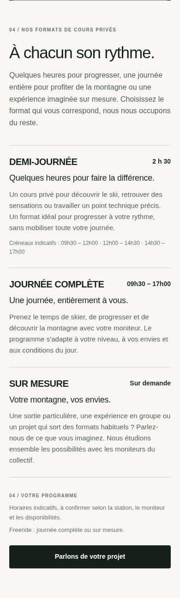
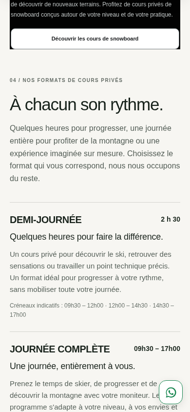
375 × 812
Section entière · Viewport exact


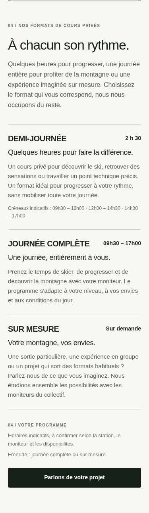
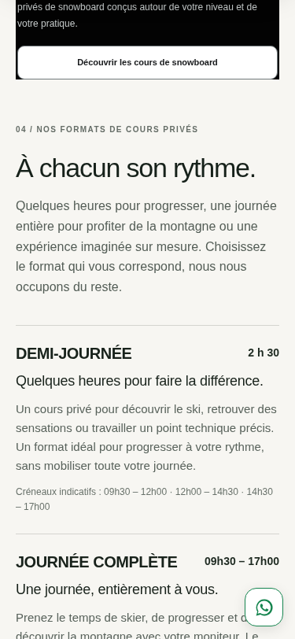
Rapport HTML/CSS, textes et accessibilité · Résultats détaillés